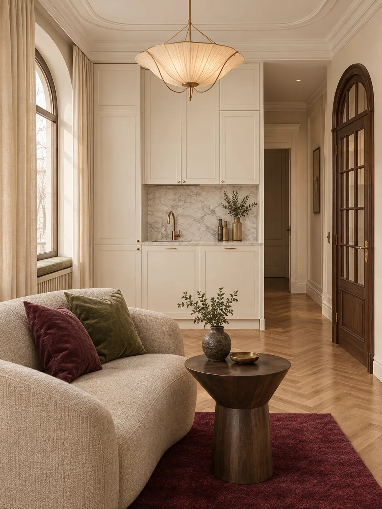

6,08 млн ₽
Чистовая без заявленной мебели
35 м² · ЖК «Первый Академ». Ключи получены по описанию продавца.
Объявление на ЦианПредложение Ирины для Аи
Мне интересно вместе с тобой пройти весь путь: найти удачные квартиры, придумать для них интерьеры и довести работы до приёмки. Давай посмотрим на объём задач, вложения и риски и решим, в каком формате это будет интересно и выгодно нам обеим.
Екатеринбург Ноябрь 2026

01 · Бизнес-модель
Показываем концепцию на конкретной планировке. После обмера фиксируем согласованный объём работ, смету и срок отдельным договором.
Покупка квартиры напрямую. Оплата недвижимости не проходит через «Метру».
Добровольный договор на проект, ремонт, мебель и технику. Базовый график: 70% при подписании, 30% после приёмки по акту.
Возможное вознаграждение за привлечённого покупателя. Только при выполнении письменного соглашения; 2% в модели не гарантированы.
02 · Рынок
Главная альтернатива для покупателя не пустая новостройка, а уже готовая квартира. Смотрим, что входит в цену и можно ли заселиться сразу.
6,08 млн ₽
35 м² · ЖК «Первый Академ». Ключи получены по описанию продавца.
Объявление на Циан7,29 млн ₽
36,6 м² · Краснолесья, 96. В объявлении указана полная комплектация.
Объявление «Квадратного метра»8,95 млн ₽
35 м² · квартира 6 млн ₽ + работы 2,95 млн ₽. На 1,66 млн ₽ (+22,8%) выше указанного готового аналога.
Сравнить полный чекЦены сторонних объявлений на 21.11.2026. Это не цены закрытых сделок, не лоты «Метры» и не гарантия наличия.
| Адрес | Площадь · этаж | Цена | Комплектация по объявлению | Сравнение |
|---|---|---|---|---|
| Краснолесья, 96 ↗ЖК «Академ-Центр» | 36,6 м² · 12/25 | 7,29 млн ₽199,2 тыс. ₽/м² | Современный ремонт, отдельная спальня, вся мебель и техника. | Сравнить ↗ |
| Павла Шаманова, 5/3 ↗ЖК «Аксиома» | 36,1 м² · 22/22 | 7,39 млн ₽204,7 тыс. ₽/м² | Ремонт и кухня. Состав остальной мебели и техники не указан. | Сравнить ↗ |
| Академика Парина, 38/3 ↗ | 36,0 м² · 15/17 | 6,65 млн ₽184,7 тыс. ₽/м² | Косметический ремонт, обновлённый санузел, кухня, техника и две гардеробные. | Сравнить ↗ |
| Вильгельма де Геннина, 25к2 ↗ЖК «Первый Академ» | 35,7 м² · 2/18 | 6,53 млн ₽182,9 тыс. ₽/м² | Чистовая, кухня с техникой. Мебель в спальне не заявлена. | Сравнить ↗ |
| Академика Парина, 38 ↗ | 34,7 м² · 18/25 | 6,50 млн ₽187,3 тыс. ₽/м² | Отделка от застройщика, кухня и гардеробная. Техника не заявлена. | Сравнить ↗ |
| Академика Сахарова, 31Б ↗ | 35,8 м² · 16/18 | 6,25 млн ₽174,6 тыс. ₽/м² | Кухня, варочная панель, шкаф и мебель в ванной. Остальное по договорённости. | Сравнить ↗ |
| Академика Ландау, 39 ↗ | 35,0 м² · 6/16 | 5,70 млн ₽162,9 тыс. ₽/м² | Ремонт, почти вся мебель остаётся. Перечень техники не указан. | Сравнить ↗ |
| Академика Сахарова, 29/4 ↗ | 35,5 м² · 18/19 | 5,65 млн ₽159,2 тыс. ₽/м² | Светлая отделка, кухня, мебельная стенка и прихожая. Техника не заявлена. | Сравнить ↗ |
В октябре 2026 года средняя цена предложения новостроек Екатеринбурга составляла 177,6 тыс. ₽/м², студий около 190 тыс. ₽/м². Это ориентир по городу без поправки на отделку и микрорайон (URA.RU · «Эталон» и «Этажи»).
РСГ-Академическое рекламирует квартиры с кухней и техникой от 6 млн ₽; на дату среза полная меблировка в продаже отсутствовала. Цена «от» не относится к идентичной квартире. Условия ипотеки застройщика не распространяются на наш договор (каталог РСГ).
Один дом с понятным сроком доступа, 3–5 лотов, две повторяемые планировки. Для базовой сметы нужна предчистовая отделка (white box), без переноса мокрых зон. 6 млн ₽ в модели не согласованная цена.
В Екатеринбурге встречаются агентские программы, например у «Брусники». Допуск, фиксацию клиента, ставку и дату платежа согласуем письменно. Проверяем модель и при 0%.
На дату среза в готовых новостройках: «Спутник-1», 25,8 м² за 4,73 млн ₽ по акции; «Первый Академ», 30,3 м² за 6,00 млн ₽ по акции (Циан). У КОРТРОС тот же лот «Спутника-1» указан за 5,913 млн ₽ без этой скидки (каталог КОРТРОС).
Локальный подрядчик приводит 30–40 тыс. ₽/м² для стандартной отделки с материалами и от 50 тыс. ₽/м² для премиальной (URALDOMA). Наши 37 тыс. ₽/м² только за ремонт предполагают white box и адаптацию. Мебель и управление считаются отдельно.
03 · Продукт
Главное УТП: до покупки показать, как работает конкретная планировка. Клиент видит, где готовить, спать, работать и хранить вещи, а не просто смотрит на красивый референс.
Молочные стены, пол «ёлочкой», винные и оливковые акценты. Показываем зоны сна, работы и хранения на компактной планировке.
Ремонт по желанию. На покупку и работы оформляются два независимых договора.
До покупки виден ориентир общего бюджета. После обмера утверждаем смету и список включений.
Клиенту не нужно отдельно координировать дизайнера, бригаду, доставку кухни и сборщиков.
График, фотоотчёты, чек-лист и акт. Финальные 30% в базовой схеме после приёмки работ.
Для пилота
2,95 млн ₽ пакет
Пол «ёлочкой» из кварцвинила, керамогранит под камень, локальная фрезеровка, мебель и техника по списку. Один существующий санузел, без переноса мокрых зон.
Открыть расчётПо отдельному запросу
4,20 млн ₽ цена для теста
Инженерная доска, заказная арка, сложная столярка и остекление после проверки проекта. Оценка затрат 3,20–3,90 млн ₽, в калькуляторе 3,45 млн ₽. Спрос и цены поставщиков не подтверждены.
Открыть расчёт| Статья | Тыс. ₽ | Что включено |
|---|---|---|
| Подготовка и инженерия | 260 | Локальная подготовка, электрика и сантехника в существующих зонах. Без исправления серьёзных дефектов white box. |
| Стены, потолок и молдинги | 230 | Подготовка, покраска, серийный лепной декор, локальный тёмный акцент. |
| Пол и плинтусы | 160 | SPC «ёлочкой» вместо инженерной доски, расход с запасом и укладка. |
| Санузел и сантехника | 345 | Гидроизоляция, керамогранит под камень, душ или ванна и стеклянный экран внутри санузла. |
| Двери и наличники | 145 | Серийные двери и отделка существующих проёмов вместо широкой заказной арки. |
| Декоративный свет и зеркала | 160 | Подвесы, бра, зеркала, фурнитура и монтаж. |
| Подытог: ремонт с материалами | 1 300 | Сумма шести строк выше. |
| Кухня | 340 | Фасады МДФ, столешница, фартук, мойка; техника отдельно. |
| Хранение и ТВ-зона | 180 | Шкафы и прихожая по согласованной схеме. |
| Мебель | 155 | Кровать, матрас, диван, стол, тумбы. |
| Техника | 110 | Холодильник, панель, вытяжка, духовка и стиральная машина. ТВ и посудомойка не включены в базовый расчёт. |
| Текстиль и логистика | 55 | Базовый текстиль, доставка и сборка. |
| Проект и управление | 185 | Адаптация и чертежи 100; управление и контроль 85. |
| Привлечение и резерв | 125 | Расходы на привлечение (CAC) 65; резерв 60. |
| Итого прямые расходы | 2 450 | До налогов и общих расходов компании. |
Из референсов взяли детали прихожей, кухни-гостиной, спальни и санузла. По фото нельзя подтвердить метраж, исходный план, марки материалов или состав инженерии. Смета для white box, не коммерческое предложение и не линейный пересчёт на 25–30 м². До договора: обмер, ведомость работ и минимум два сопоставимых предложения. Ориентиры: ремонт URALDOMA, дизайн Е&Т, фрезерованные кухни «Мария», шпонированные панели «Волховец».
Доступ, письменные условия и 3–5 кандидатов.
План, расстановка, 2–3 ракурса и карточка с двумя ценами.
Гипотеза срока продажи. Квартиру оформляет застройщик, работы согласуем отдельно.
Чертежи, комплектация и заказы позиций с долгой поставкой.
Фото скрытых работ, график и контроль качества.
Монтаж, тест техники, клининг, акт и финальный платёж.
Рабочий ориентир: 10–14 недель после доступа, аванса и утверждения задания, или 14–20 для «Близко к фото». До первой сдачи в пилоте ориентировочно 15–25 недель без дополнительного ожидания ключей. Некоторые этапы идут параллельно.
Например: «Кухня: фасад МДФ, столешница, мойка и согласованная техника. Не включено: телевизор, перенос мокрых зон, исправление скрытых дефектов, не выявленных при обмере». Список уточняем и подписываем для объекта.
«Неделя 4: электрика разведена. Сверено с планом, фото трасс приложены. Следующий этап: закрытие штроб после контрольного осмотра». Это шаблон, не отчёт выполненного объекта.
Проверить фасады и фурнитуру, подключить и испытать технику, осмотреть отделку, занести замечания в перечень. При желании покупатель может отдельно пригласить независимого специалиста.
В акте фиксируем принятые работы и открытые замечания, сроки их устранения и документы по оборудованию. В договоре указываем порядок гарантийного обращения, не обещая одинаковую гарантию для всех работ и товаров.
04 · Ирина и Ая
Роли пока не делим. Сначала посмотрим на весь объём работы и выберем пилот, который будет по силам и интересен нам обеим.
Ищем квартиры и застройщика, проверяем планировки, готовим расчёты, концепции и объявления. Работа начинается до первых поступлений.
Организуем показы, сопровождаем покупку у девелопера. После обмера отдельно согласуем комплектацию, цену работ, календарь и платежи.
Ведём стройку, закупки и приёмку. Параллельно могут идти показ следующей квартиры, монтаж кухни и оплата материалов.
| Направление | Что делаем | Результат |
|---|---|---|
| Поиск недвижимости | Сравнить ЖК, цены, планировки, ключи и исходное состояние. | Шорт-лист 3–5 лотов и актуальные условия. |
| Застройщики | Согласовать доступ, рекламу, фиксацию клиентов и бонус. | Цель: одно письменное соглашение. |
| Предложения и расчёты | Собрать полный чек, срок, график и расчёт затрат по клиенту. | Карточка лота, версии предложения и сметы. |
| Интерьерные проекты | Концепции, визуализации, после обмера чертежи и спецификация. | Две исходные концепции, адаптация по объектам. |
| Клиенты и маркетинг | Реклама, мероприятия, презентации и показы, проверка УТП. | Календарь, воронка, лимит затрат. |
| Сопровождение сделок | Документы, доступ, ключи, отдельный договор работ и приёмка. | Чек-лист по двум договорам и платежам. |
| Поставщики и закупки | Работы, материалы, сантехника, мебель, техника, свет, текстиль, аксессуары. | Реестр заказов, доставок, замен и возвратов. |
| Контроль строительства | Подряд, график, фото скрытых работ, проверка монтажа и техники. | Журнал работ, акты и гарантийный порядок. |
| Инвестиции и отчётность | Бюджет, резерв, платежи по объектам, первичные документы; бухгалтерская и налоговая отчётность с выбранным специалистом. | Сверка денег, обязательств и рисков. Авансы объектов не смешиваем. |
| Дополнительные специалисты | Оценить, когда нужны агент, помощник по поиску и показам или координатор сделок. | Объём задач, цена и условия до привлечения. |
05 · Калькулятор
Три взгляда на один сценарий: деньги покупателя, экономика одного договора и капитал на пилот. Изменения применяются сразу во всех вкладках.
Базовые допущения
Полный чек = квартира + пакет. Выручка «Метры» = пакет + бонус; цена квартиры не входит. Результат = выручка − прямые расходы. Маржа = результат / выручка; результат к себестоимости = результат / прямые расходы.
Берём максимальный дефицит до поступлений, включая расходы на привлечение до договора. При трёх платежах учитываем также расход до промежуточного акта. Бонус приходит позже. ROI сделки = результат / пиковый дефицит, не годовая доходность.
Разовые + ежемесячные расходы × месяцы + активные объекты × максимум из буфера и пикового дефицита. Результат пилота = результат сделки × завершённые объекты − разовые и общие расходы. Резерв не вычитаем второй раз.
При 70/30 это платёж после приёмки. Из него 385 тыс. ₽ покрывают кассовый разрыв, 500 тыс. ₽ остаются результатом до общих расходов и налогов. Возможные 120 тыс. ₽ бонуса учитываются отдельно.
| Сценарий | Результат | Разрыв | ROI за сделку |
|---|---|---|---|
| Без бонуса | 500 тыс. ₽ | 385 тыс. ₽ | 129,9% |
| База, бонус 2% | 620 тыс. ₽ | 385 тыс. ₽ | 161,0% |
| Стресс, затраты +10%, бонус 0% | 255 тыс. ₽ | 630 тыс. ₽ | 40,5% |
При 30/40/30 первый платёж снижается с 2,065 млн до 885 тыс. ₽. Если до второго платежа потрачено 1,50 млн ₽, пиковый дефицит вырастает до 615 тыс. ₽. Это тестовая альтернатива, не утверждённый график.
Сальдо по одному объекту, без общих расходов и налогов. Вклад CAC уже включён в прямые расходы. Последний шаг зависит от соглашения с застройщиком.
06 · Сравнение с флиппингом
Во флиппинге деньги связаны покупкой и возвращаются после перепродажи. Здесь объект покупает сам клиент, но темп всё равно ограничен спросом, резервом, бригадами и контролем.
Сценарий · 3 одновременных объекта
Одинаковое число объектов, сравнимый состав ремонта, без кредита. У «Метры» здесь показан только рабочий резерв; с запуском и общими расходами базовый бюджет составляет 2,05 млн ₽.
| Критерий | «Метра» | Флиппинг |
|---|---|---|
| Покупка объекта | 0 ₽; платит клиент | 5,30 млн ₽, условная покупка с дисконтом |
| Работы и прочие расходы | 2,45 млн ₽, частично покрыты авансом 2,065 млн ₽ | 2,385 млн ₽ работы + 215 тыс. ₽ оформление, содержание и продажа |
| Результат до общих расходов и налогов | 620 тыс. ₽ с бонусом или 500 тыс. ₽ без | 400 тыс. ₽ при перепродаже за 8,30 млн ₽ |
| ROI за цикл | 161,0% с бонусом / 129,9% без, на дефицит 385 тыс. ₽ | 5,1% на зарезервированные 7,90 млн ₽ |
При затратах на флип 7,90 млн ₽: выход за 7,50 млн даёт −400 тыс. ₽; за 8,30 млн +400 тыс. ₽; за 8,70 млн +800 тыс. ₽. Это сценарии, не подтверждённые цены перепродажи. Цикл флипа 5–8 месяцев принят как допущение.
07 · Пилот
Проверяем реальную готовность платить и собственную загрузку. Не назначаем роли заранее и не берём постоянные обязательства до решения о запуске.
Финансирование старта
1,55–2,05 млн ₽
На два-три параллельных объекта, включая запуск, пять месяцев общих расходов и оборотный резерв. Если все три объекта одновременно в стрессе — 2,44 млн ₽.
Пересчитать бюджетОдин застройщик, письменные условия, 3–5 лотов и два концепта.
12–15 интервью, затем 15–20 квалифицированных предложений за 4–6 недель после запуска. Цель: хотя бы два первых платежа.
Для расширения нужны 2–3 завершённых объекта, положительный результат каждого без бонуса и подтверждённый резерв.
300 тыс. ₽ разово: два концепта 90; сайт, шаблоны и CRM 65; договоры и учёт 55; обмеры и проверка подрядчиков 40; координация запуска 50. Общие расходы: 50 тыс. ₽ × 5 месяцев. Буфер: 500 тыс. ₽ на активный ремонт. Трафик учтён в CAC.
1,31 млн ₽ с бонусами или 950 тыс. ₽ без них после разовых и общих расходов. В стрессе 215 тыс. ₽. До налогов и окладов; не прогноз прихода денег к концу пятого месяца.
CAC к ориентиру 65 тыс. ₽, расходы к 2,45 млн ₽, пиковый разрыв к лимиту 500 тыс. ₽, срок к договору. Записываем конверсию, причины отказа, срок бонуса и претензии по качеству.
Письменные условия застройщика, фактический доступ, спецификацию, смету, приёмку и гарантии, цены и сроки подрядчиков. Договоры проверяет юрист. Распределение обязанностей и личных вкладов пока открыто.
08 · Экспертная оценка
За отделку покупатели уже платят, но чек 8,95 млн ₽ и 70% аванса по отдельному договору выглядят нишевым предложением. На пилот лучше выводить адаптацию референса, а не дорогую копию.
Ищем тех, кому подходит 35 м², важен интерьер под себя и есть отдельный бюджет на работы. Для иногородних может быть ценен дистанционный контроль; тем, кому надо въехать сразу, готовый аналог подходит лучше.
Покупателям без резерва сверх ипотеки будет сложно оплатить аванс. Для них можно отдельно проверить пакет меблировки по готовой отделке. Инвестору под аренду доплату стоит оценивать по приросту чистого дохода, а не по внешнему виду квартиры.
Что известно о рынке
Однокомнатных и студий продано в Академическом за январь–июнь 2026 г. («Объектив», «Квадратный метр»).
Учитываемых сделок в новостройках Екатеринбурга в I полугодии с чистовой отделкой, не с дизайнерским ремонтом (Циан).
Учтённых сделок с новостройками города за январь–сентябрь 2026 г. прошли с ипотекой. Проверяем отдельный бюджет на работы («Объектив», «Квадратный метр»).
В общероссийском опросе «Лемана ПРО» 9% рассматривающих новостройки указали дизайнерский ремонт от застройщика, а 42% назвали приемлемой доплату за готовый ремонт 10–20% от цены квартиры без ремонта; более 30% допускали 3% (результаты опроса). В отдельном опросе «Петровича» и «Этажей» доплату более 15% допустил примерно один из десяти (РБК Недвижимость). Это не локальные измерения, и вопросы в опросах различаются.
Пакет «Метры» включает мебель, технику и управление. Премия 22,8% к готовому аналогу относится к полному чеку, а не к цене ремонта. Ни один из этих показателей не говорит, сколько покупателей Екатеринбурга подпишут договор.
| Общий чек | Пакет | Результат без бонуса | Пиковый дефицит |
|---|---|---|---|
| 8,45 млн ₽ | 2,45 млн ₽ | 0 ₽ | 735 тыс. ₽ |
| 8,70 млн ₽ | 2,70 млн ₽ | 250 тыс. ₽ | 560 тыс. ₽ |
| 8,95 млн ₽ | 2,95 млн ₽ | 500 тыс. ₽ | 385 тыс. ₽ |
| 10,20 млн ₽ | 4,20 млн ₽ | 750 тыс. ₽ | 510 тыс. ₽ |
Квартира 6,00 млн ₽, график 70/30, первые три строки: прямые расходы 2,45 млн ₽. Последняя: другой пакет с затратами 3,45 млн ₽. Дешевле искать лучший вход или менять состав, чем просто уступать по цене при тех же работах.
Пересчитать цену и авансОбмер, подписанная спецификация, смета на согласованный объём, список исключений и письменное согласование изменений (ст. 709 ГК РФ).
Проверяемый получатель платежа, образцы и акты. Поэтапный график можно тестировать после расчёта резерва; это не эскроу. Условия отказа от договора проверяет юрист (ст. 32 Закона о защите прав потребителей).
График от фактического доступа, аванса и утверждения задания. Фото скрытых работ, чек-лист, возможность независимой приёмки и порядок гарантийных обращений.
Два оплаченных договора по цене, которая работает без бонуса, сильнее кликов и устных обещаний. При нуле после 15–20 квалифицированных предложений меняем вход, пакет или платежи, а не просто увеличиваем рекламу.
При той же цене и комплектации сравним «Интерьер на вашей планировке до покупки» с «После обмера вы знаете, что входит в смету и когда принимать работу». Отметим, какое сообщение привело к запросу спецификации, встрече или оплате.
Спросим про полный бюджет, альтернативу и график взносов. Отдельно тестируем цену, состав и платежи. Один договор повод разобраться с отказами и продолжить ограниченный тест, не увеличивать нагрузку.